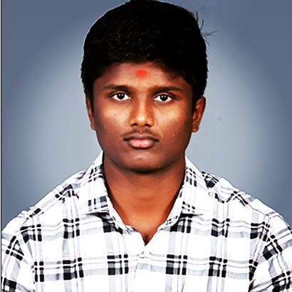

NAVANEET M S
STUDENT

My Contact
- navaneetms1404@gmail.com
- +919342-387264
- Rasipuram,Namakkal,Tamil Nadu
Hard Skill
- computer programing
- problem solving
- time management
- active listening
Soft skill
- observation
- decision making
- communication
- mathematical skills
Educational Background
- rasi international school completed in 2019
- narayana juniour college completed in 2021
About Me
Dedicated Btech student with a passion of engineering
,proficient in python and good in C.Excited to apply
technical knowledge gained from courses to
contriburte effectively to internships.Eager to drive
technical excellence in a collabrative environment